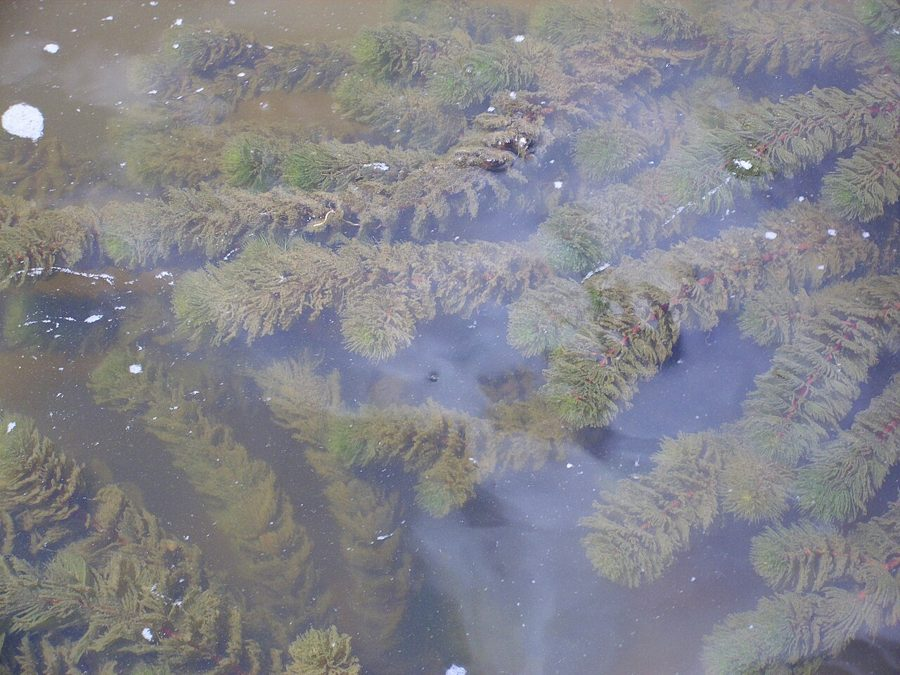

जलनीमHornwort
Ceratophyllum demersum · Ceratophyllaceae · FLR-0151

- Scientific name
- Ceratophyllum demersum L.
- Family
- Ceratophyllaceae
- Hindi
- जलनीम
- Local names
- jalneem, jal neem, sewar, hornwort, coontail
- Status here
- native
- Movement
- Resident, here all year
- IUCN
- not evaluated
- Review
- audited and independently read
When to look कब देखें
Present all year.
Uses and possibilities उपयोग और संभावनाएँ
Drawn from the documented uses in the profile below, where each is labelled traditional, current or a research lead. All uses →
जलनीम / Hornwort
Ceratophyllum demersum L. — Ceratophyllaceae
जलनीम (हॉर्नवर्ट) — पानी में पूरी तरह डूबा हुआ पौधा, जिसकी पत्तियाँ सींग की तरह बहुत बारीक़ और बँटी होती हैं। पानी के तालाब, नहरें और धीमे नदी के हिस्सों में पाया जाता है। इसके पास असली जड़ें नहीं होतीं; यह पानी में तैरता है। जलीय जानवरों के लिए शरण और भोजन का स्रोत, और पानी को साफ़ रखने वाला। मछली के तालाबों में इसे जानबूझकर रखा जाता है।
Quick Identification त्वरित पहचान
| Feature | Description |
|---|---|
| Plant habit | Entirely submerged, branching, free-floating, dark green |
| Leaves | Deeply divided, needle-like, arranged in whorls, rigid, stiff texture when handled |
| Roots | None; plant is fully independent of soil |
| Flowers | Tiny, obscure, emerging briefly at water surface |
| Fruit | Small, hard, spine-tipped, 1-seeded nut |
| Feel | Stiff, brittle; feels like fine wires when squeezed |
Field tip: In a pond or canal, look down through the water for rigid, finely divided plant material forming feathery clumps. Pull a stem out; note the absence of roots and the stiff, fragile texture. The needle-like leaves confirm it is hornwort.
हिंदी — कैसे पहचानें: पानी में पूरी तरह डूबा, सींग की तरह बारीक़-बँटी पत्तियाँ, कठोर, कोई जड़ नहीं, तैरता है।
Morphology आकारिकी
Biometrics:
| Measurement | Range |
|---|---|
| Plant length | 30 cm–2 m |
| Leaf length | 5–15 mm |
| Fruit length | 3–5 mm |
Stems and branching: Soft, hollow, branching dichotomously or freely; brittle and fragile.
Leaves: Arranged in whorls of 5–12, with 2–3 divisions at each node; dark green, rigid when handled.
Roots: Absent; the plant is entirely independent of sediment.
Flowers: Tiny, monoecious or dioecious, emerging briefly above water in summer; insect-pollinated or self-pollinated.
Fruits and seeds: Hard, spindle-shaped, with spine-like processes; one seed per fruit; germinates in spring after overwintering.
हिंदी: पत्तियाँ सींग जैसी बँटी, चक्रों में; पौधा नरम, खोखला, तैरता है, कोई जड़ नहीं।
Behaviour & Ecology व्यवहार और पारिस्थितिकी
A truly aquatic plant requiring no soil, hornwort is fully submerged except for flowers. It grows year-round in still or slow-moving fresh water, reaching maximum growth during the monsoon when water levels are high and light is abundant. The plant releases oxygen during photosynthesis, benefiting water quality. Small aquatic invertebrates (insects, crustaceans) and fish fry shelter and feed among the fine leaves. The plant is grazed lightly by fish and ducks but grows faster than it is consumed, so populations remain stable in natural settings.
हिंदी: पानी में पूरी तरह जीवन बिताता है, अक्सर तैरता है। ऑक्सीजन देता है। मछलियों और कीड़ों का घर।
Life Cycle / Phenology जीवन चक्र
| Month / season | Event |
|---|---|
| July–September | Peak growth during monsoon |
| October–November | Flowering; seed production |
| December–February | Growth slows; seeds overwinter in sediment |
| March–June | Spring growth; seeds germinate |
हिंदी: बरसात में सबसे ज़्यादा बढ़ता है, सर्दियों में धीमा, बीज मिट्टी में।
Associated Species / Interactions संबंधित प्रजातियाँ
- Fish and invertebrate habitat: Provides shelter for Common Carp, Mola Carplet, Indian Green Frog tadpoles, water insects.
- Water filter: Removes excess nitrogen and phosphorus.
- Competitors: Hydrilla and Water Hyacinth in eutrophic waters.
Pests and Diseases कीट और रोग
- Minimal pests; occasionally grazed by fish and ducks.
Agricultural / Human Relevance कृषि प्रासंगिकता
Traditional and Ethnobotanical Use:
- Water clarification. In traditional fish ponds, the plant removes excess nutrients and moderates algal growth.
- Animal fodder. The plant is fed to domestic ducks and occasionally to cattle, though nutritional value is low.
- Aquarium plant. In home aquaria, it is cultivated as a natural oxygenator and decoration.
Today. Used in aquaculture ponds and home aquaria. Scientific interest in its role in water quality improvement.
Research direction (a lead, not a result). The denitrification capacity of hornwort populations in agricultural ponds deserves study for nutrient pollution control.
हिंदी: मछली के तालाबों में पानी साफ़ करने के लिए। बतख़ों को खिलाया जाता है। पानी में अच्छाई लाता है।
Expected Locally स्थानीय रूप से अपेक्षित
Not a field record. Written from published accounts for eastern Uttar Pradesh. No confirmed local sighting yet — if you have seen it, that is what the atlas needs.
अभी तक स्थानीय पुष्टि नहीं। यह विवरण प्रकाशित स्रोतों से है, किसी अवलोकन से नहीं।
To be expected in slow-moving canals, ponds, and backwaters across the district, especially in fish ponds managed for aquaculture.
Distribution वितरण
Global range: Cosmopolitan in temperate and tropical fresh waters worldwide.
In India: Widespread in all states in lakes, canals, and ponds.
In Uttar Pradesh: Common in irrigation areas.
In Basti district / eastern UP: Expected in all ponds and managed canals.
Research Questions शोध प्रश्न
Anyone can investigate these | कोई भी इन प्रश्नों की जाँच कर सकता है
- How many canals in your block have hornwort, and how thick are the mats? — Walk the canals in August and map.
- Does hornwort reduce algal blooms in ponds? — Compare ponds with and without hornwort.
- How fast does the plant grow in August? — Mark a clump and measure weekly.
- Do fish and ducks prefer hornwort to hydrilla? — Offer both in a small pond.
- How much nitrogen does a kilogram of hornwort remove from water? — Laboratory test with fertilizer water.
Similar Species मिलती-जुलती प्रजातियाँ
| Species | How to tell apart | हिंदी |
|---|---|---|
| Hydrilla (Hydrilla verticillata) | Leaves in whorls of 3–8 with toothed margins; roots present; plant rooting in sediment | 3-8 पत्तियों के चक्र, कांटों वाली, जड़ें होती हैं |
| Elodea (Elodea canadensis) | Leaves in groups of 3, shorter, blunt; plant rooting in sediment | 3 पत्तियों के समूह |
| Water Hyacinth (Eichhornia crassipes) | Free-floating but with large, inflated petioles; leaves rounded; larger plant | मोटी पत्ती, गोल, बड़ा पौधा |
Field rule: A fully submerged, free-floating plant with needle-like, finely divided leaves in stiff whorls and no roots is hornwort.
Taxonomy & Classification वर्गीकरण
Original description. Described by Carl Linnaeus in Species Plantarum (1753: 992). The epithet demersum means "submerged" in Latin.
Subspecies. Variable; multiple subspecies recognized.
Family and order placement. Ceratophyllaceae, order Ceratophyllales. Ceratophyllum is a monogeneric family with about 3 species.
Phylogenetic notes. The family Ceratophyllaceae is basal among flowering plants and is placed in its own order, Ceratophyllales.
IUCN status rationale. Not evaluated. Widespread and stable.
Photo Gallery फोटो गैलरी
Photos needed आवश्यक फोटो
- [ ] Plant in water from above (पानी में पौधा)
- [ ] Single stem showing whorled leaves close-up (पत्तियाँ)
- [ ] Plant pulled from water showing lack of roots (जड़ों का अभाव)
Atlas Connections संबंधित प्रजातियाँ
- Hydrilla — the invasive competitor in the same habitat
- Mola Carplet and Indian Green Frog — residents of the same ponds
- Water Hyacinth — another floating aquatic plant
References संदर्भ
- Linnaeus, C. (1753). Species Plantarum, vol. 2, p. 992. Stockholm. [original description]
- Hooker, J.D. (1879). The Flora of British India, vol. 6. L. Reeve, London. (Ceratophyllum)
- Santamaria, L. (2002). Why are most aquatic plants widely distributed? Dispersal, clonal growth and small-scale heterogeneity in a stressful environment. Acta Oecologica 23(3): 137–154.
- GBIF Occurrence Data — Ceratophyllum demersum, India (2026).
Source file: species/flora/aquatic/hornwort.md